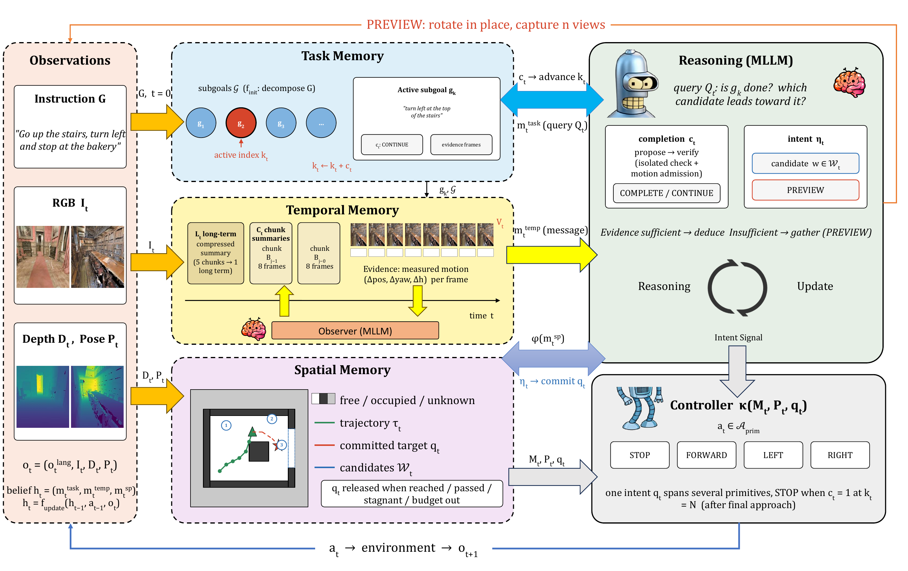

text
Task and Evidence
论文研究零样本 vision-language navigation 中的历史组织。8B 规模模型没有 navigation-specific training，却需要把当前图像、语言指令、已走过的路线和环境几何联系起来。作者把 memory 分成三部分。Task memory 记录 instruction 和 active subgoal，temporal memory 记录带 measured motion 的近期观测与层级摘要，spatial memory 累积 depth、pose、occupancy map、trajectory 和 committed target。
系统由 8B observer、Qwen3-VL-8B reasoner 和几何 controller 组成。reasoner 输出 completion flag 和 intent。intent 可以是一个 waypoint，也可以是 PREVIEW，表示原地旋转获取更多视角。R2R-CE val-unseen 的完整系统 SR=0.263、SPL=0.196、nDTW=0.379。去掉 temporal memory 后 SR 降到 0.190，SPL 降到 0.112，平均路径从 16.9 m 增加到 39.1 m。
figure
Memory Architecture

Peng et al. · Figure from the original paper, converted from the authors’ PDF source · CC BY 4.0 · Paper & Caption ↗
图 1 从左到右给出闭环。输入是 instruction $G$、RGB $I_t$、depth $D_t$ 和 pose $P_t$。Task memory 先把指令分成子目标，并维护 active index $k_t$。Temporal memory 保留最近窗口、每 8 帧一个 chunk summary，以及由 observer 生成的 long-term summary。每条观察与相对运动 $(\Delta pos,\Delta yaw,\Delta h)$ 绑定。Spatial memory 把 depth 和 pose 融合为 occupancy map，维护 trajectory、waypoint candidates 和 committed target。
reasoner 读取三类 memory，先判断 active subgoal 是否完成，再输出 waypoint 或 PREVIEW。controller 在 occupancy map 上规划到 committed target 的低层动作，环境反馈新的 RGB、depth、pose，memory update 进入下一轮。对于 LingBot-Map，这种结构提示我们把“视觉历史”“几何状态”和“任务语义”用不同读取接口组织，再通过可学习的 query 选择哪些信息进入几何解码。
equation
State Update Equations
作者把完整历史写成 $h_t=(m_t^{task},m_t^{temp},m_t^{sp})$，每一步由上一个 memory、上一动作和当前观测共同更新。Task memory 的 active subgoal index 由完成标记递增。Temporal memory 以当前观测和测得的运动增量更新 recent window 和 chunk summaries。Spatial memory 用 depth 与 pose 更新 occupancy map 和 trajectory。
这类分解让“记住什么”和“怎么执行”可以分开检查。任务语义不会直接替代几何，几何地图也不承担所有语言解释。迁移到流式重建时，可以让语义 summary 作为 memory key，几何 token 作为 value，再由当前帧 query 读取两者。
h_t=f_{update}(h_{t-1},a_{t-1},o_t),\quad h_t=(m_t^{task},m_t^{temp},m_t^{sp})equation
Waypoint and Preview Policy
reasoner 的 intent 空间是 $\mathcal{W}_t\cup\{STOP,PREVIEW\}$。waypoint $q_t$ 可以由图像坐标经过 depth 和 calibration 反投影到世界坐标。controller $\kappa(M_t,P_t,q_t)$ 在 occupancy map 上产生 primitive action。若当前证据不足，reasoner 输出 PREVIEW，机器人原地旋转采集 $n$ 个视图，这些视图再进入 temporal memory。
论文把 PREVIEW 当作主动获取证据的接口，而不是把所有历史都塞进上下文。这一思想对应到 LingBot-Map，可以把高几何不确定度区域触发为局部再观测或更高 memory read 频率，前提是在线预算和延迟被单独报告。
\eta_t\in\mathcal{W}_t\cup\{STOP,PREVIEW\},\qquad \mathbf a_t=\kappa(M_t,P_t,q_t)text
Training and Inference
论文使用 JoyAI-VL-Interaction-8B 作为 observer，Qwen3-VL-8B 作为 reasoner，运行在 8 张 A100 上。核心系统是零样本导航，作者没有用 navigation trajectory 去训练这两个 backbone。observer 的输出是层级观察摘要，reasoner 通过 memory-conditioned prompt 生成完成判断和 waypoint intent，controller 执行低层动作。
因此论文的主要学习对象是 memory representation 和调用协议，而不是一个端到端反向传播的导航策略。对 LingBot-Map 的启发是把语义 memory 当作显式接口来分析。若要让它改善几何，需要把 semantic summary 与视觉 token 在 memory 写入前融合，并让后续帧的 geometry loss 通过可微 memory state 反向影响写入权重。
table
Experiments and Limits
作者在 R2R-CE val-unseen 上比较 zero-shot 与 post-trained baselines，并做 memory ablation。完整系统在 Qwen3-based zero-shot 对照中达到最高 SR 与 SPL，但 post-trained 方法仍更高。去掉 temporal memory 后，SR 0.263→0.190，SPL 0.196→0.112，nDTW 0.379→0.201，路径长度 16.9→39.1 m，steps 131→292。去掉 spatial map 和 planning 也会降低 SR。
真实实验在 Unitree Go2 的 corridor 和 office 环境进行。LAW2 通过 FLIP、GOAL-ONLY 和 PARAPHRASE 检查方向响应、路线信息依赖和语言改写鲁棒性。限制是完整系统同时改变了 observer、reasoner、action interface 和 execution setting，memory ablation 更能回答组件作用，但不能把所有提升归因于单一摘要模块。论文也说明 planned preview 会增加 token 和动作成本。
| Variant | SR ↑ | SPL ↑ | nDTW ↑ | Path m ↓ |
|---|---|---|---|---|
| Complete | 0.263 | 0.196 | 0.379 | 16.9 |
| w/o Temporal | 0.190 | 0.112 | 0.201 | 39.1 |
| Primitive-action variant | 0.125 | 0.085 | — | — |
text
Connection to Streaming Reconstruction
这篇论文把 memory 的三种职责分开，对 LingBot-Map 的语义融合有两个直接对应。Temporal memory 可以对应旧帧的压缩视觉或几何 token，spatial memory 可以对应世界坐标点图和相机轨迹，task memory 可以对应当前对象查询、重建区域或不确定度目标。当前帧 query 先读取 task/semantic key，再读取空间邻域的 geometry value，可以比单一无结构 KV 更容易检查语义到底影响了什么。
它还提醒我们把“保留证据”“使证据可访问”“获取新证据”分别评估。语义加入 memory 后，应该分别报告语义 token 是否被写入、几何 query 的 attention 是否读取这些 token，以及 geometry loss 是否在未来帧上受益。论文的导航结果不能直接替代重建实验，但提供了状态拆分和 ablation 的设计模板。
Discussion
Reading Questions
question
answer
question
answer
question
answer
References
Figure 1 is reproduced from the authors’ original source figure without conceptual modification under CC BY 4.0. First public version: 28 October 2026, v1. This note reads v2 from 3 November 2026.
Verified on 2026-11-10. Paper results refer to the linked versions. Repository references were checked on this date.